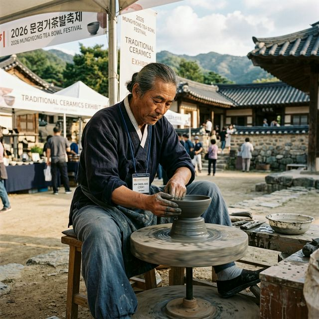
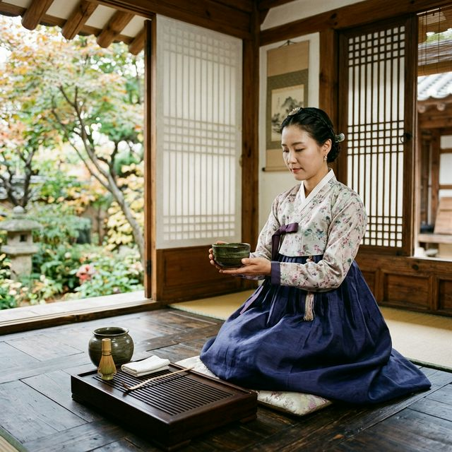
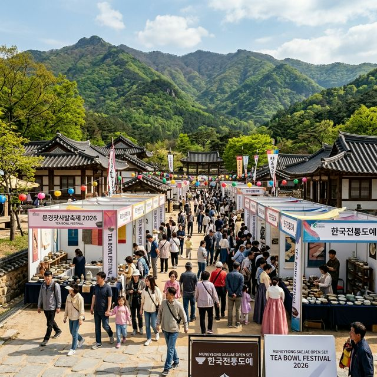

경상북도를 대표하는 명품 축제인 문경 찻사발축제가 2026년 봄, 더욱 내실 있는 프로그램으로 찾아옵니다. 축제 기간은 5월 1일 금요일부터 5월 10일
일요일까지로, 근로자의 날과 어린이날을 포함한 5월 초의 황금 주간을 겨냥하고 있습니다. 문경은 예로부터 양질의 사토와 땔감이 풍부하여 도자 문화가 발달했으며, 오늘날에도 전통
망댕이가마(특유의 흙벽돌 가마) 방식을 고수하는 국내 도예의 메카로 불립니다.
축제의 무대인 문경새재 오픈세트장은 그 자체가 하나의 거대한 박물관입니다. 조선 시대 성곽과 저잣거리가 재현된 공간 사이사이로 도자기 부스들이 줄지어 서 있는 풍경은 오직
문경에서만 만날 수 있는 이채로운 장관입니다. 2026년 축제는 'K-도자기, 세계를 담다'라는 글로벌 테마 아래, 국내 명장들은 물론 해외 작가들까지 참여하는 대규모 교류전이 함께 열려 볼거리를
풍성하게 채웠습니다.
개막일인 5월 1일에는 문경새재 야외공연장에서 박서진, 안성훈 등 인기 가수가 출연하는 축하 공연이 열려 축제의 열기를 더합니다. 낮에는 차분한 도자 예술을 감상하고,
저녁에는 신명 나는 무대를 즐길 수 있는 입체적인 일정 구성이 돋보입니다. 축제장 도심과 행사장을 연결하는 셔틀버스가 수시로 운행되어 접근성 또한 한층 강화되었습니다.

2026 문경 찻사발축제 현장 — 전통 물레를 사용하여 찻사발을 빚는 기능장의 섬세한 손길 — AI 제작 이미지
축제를 가장 알차고 실속 있게 즐기는 핵심은 '축제 패스권(Pass)'을 구매하는 것입니다. 성인 기준 15,000원인 이 패스권은 단순히 입장권을 넘어선
종합 체험 이용권의 성격을 띱니다. 패스권에는 찻사발 빚기 체험권, 말차 다례 체험권이 기본으로 포함되어 있어 하나하나 따로 결제할 때보다 약 30% 이상의 비용을 절감할
수 있습니다.
특히 패스권 소지자에게는 문경시 내 주요 관광시설(문경 단산 모노레일, 에코월드 등)의 입장료 할인 혜택이 주어지며, 축제장 내부의 특정 카페나 식당에서 사용할 수 있는
할인 쿠폰이 함께 제공됩니다. 2026년에는 패스권 디자인을 전통 문양이 새겨진 기념품 형태로 제작하여 축제 이후에도 책갈피나 장식품으로 사용할 수 있도록 세심하게 배려했습니다.
현장에서 구매하는 것도 가능하지만, 축제 홈페이지를 통한 사전 예매 시에는 추가 할인이나 대기 없이 빠르게 입장할 수 있는 '패스트 트랙' 기능을 누릴 수 있습니다. 가족
단위 방문객이라면 자녀 수에 맞춰 패스권을 구매하여 아이들에게 흙을 직접 만지는 촉각 체험과 전통 차 문화의 정숙함을 경험하게 해주는 것이 최고의 교육 여행이 될 것입니다.
문경 축제의 백미는 도예 명장들이 집무를 수행하는 모습을 직접 볼 수 있는 '사기장의 하루' 시연 프로그램입니다. 무형문화재 사기장들이 물레를 돌려 찻사발의 형태를 잡고,
정교하게 문양을 새기는 과정은 지켜보는 것만으로도 경외심을 자아냅니다. 관람객들은 명장과 직접 질의응답을 나누며 문경 도자기만이 가진 '막사발'의 미학(꾸밈없는 자연스러운
미)에 대해 깊이 있는 이해를 할 수 있습니다.
기념전시관 내부에서 열리는 '문경도자기 명품전'에서는 수천만 원을 호가하는 보물급 다구들을 감상할 수 있습니다. 2026년에는 특별히 '조선의 찻사발, 2026년의 식탁
위로'라는 기획 전시가 열려, 전통 도자기가 현대적인 인테리어와 어떻게 조화될 수 있는지를 보여주는 라이프스타일 전시가 진행됩니다. 인테리어에 관심 있는 분들이라면 놓치지 말아야 할
섹션입니다.
또한 전국 찻사발 공모대전 수상작 전시회는 신진 작가들의 톡톡 튀는 아이디어와 감각을 엿볼 수 있는 공간입니다. 전통의 기법 위에 현대적 감성을 덧입힌 작품들을 통해 우리
도자 문화의 미래를 읽을 수 있습니다. 전시장 곳곳에는 도자기에 담긴 차를 시음할 수 있는 공간이 마련되어 있어 안구 정화와 심신 안정을 동시에 꾀할 수 있습니다.

전통 한옥에서 진행되는 말차 다례 체험 — 정성껏 끓여진 차 한 잔의 여유 — AI 제작 이미지
보는 것에 그치지 않고 참여하는 축제를 지지하는 문경은 다양한 체험존을 운영합니다. '찻사발 쓰기' 체험은 본인이 직접 빚은 도자기에 이름이나 소망을 적어 넣는 활동으로,
건조와 전문가의 시유 과정을 거친 뒤 집으로 택배 배송해 줍니다. 수개월 뒤 도착하는 '나만의 그릇'은 여행의 추억을 다시금 상기시키는 선물이 됩니다.
오픈세트장의 분위기를 백분 활용한 '한복 입고 궁 투어' 역시 빠질 수 없는 인기 코스입니다. 축제장 내 한복 대여소에서 전통 복장을 갖춰 입고 사극 촬영 세트장을
배경으로 사진을 찍으면 어디서도 찍을 수 없는 인생샷을 건질 수 있습니다. 특히 2026년에는 한복 착용객에게 요장별 스탬프 투어 완료 시 문경사랑상품권을 추가 증정하는
이벤트가 있어 참여율이 매우 높습니다.
차의 역사와 종류를 배우는 '다례 체험장'에서는 전문가의 지도 아래 차를 우려내고 마시는 예법을 익힐 수 있습니다. 최근 MZ세대 사이에서 조용한 인기를 끌고 있는 '다기
컬렉팅' 문화를 반영하여, 입문자용 다기 세트를 저렴하게 구성해 판매하는 팝업 스토어도 함께 열립니다. 흙과 차, 그리고 고즈넉한 풍경이 어우러진 체험들은 그야말로 오감을 만족시키는 여행 코스입니다.
2026년 문경 찻사발축제는 한국의 전통에 머물지 않고 글로벌과 미래를 동시에 조망합니다. 일본 최고의 다도 가문인 '우라센케'를 초정하여 진행하는 특별 다례 시연은 한일
양국의 다도 문화를 비교해 볼 수 있는 귀한 시간입니다. 찻사발을 다루는 섬세한 예우와 절도 있는 동작은 관객들에게 정적인 감동을 선사할 것입니다.
반면, 축제장 한편에서는 인공지능(AI) 도자기 안내 로봇과 로봇 팔이 찻물을 따라주는 신선한 기술 시연이 병행됩니다. 어린이 관람객들은 로봇이 들려주는 도자기 이야기를
들으며 역사에 흥미를 느끼고, 어르신들은 세상의 변화를 실감하는 이색적인 풍경이 연출됩니다. 전통과 미래가 공존하는 문경만의 유연한 축제 기획력이 돋보이는 대목입니다.
또한 국제교류전 구역에서는 유럽, 중국, 동남아시아의 도예 작가들이 직접 참여하여 각 나라별 흙의 특징과 가마 방식을 소개합니다. 한국 찻사발과는 또 다른 매력의 이국적인
다기들을 감상하고 구매할 수 있는 기회이기도 합니다. 전 세계적으로 'K-컬처'에 대한 관심이 높은 시점인 만큼, 해외 관광객들을 위한 다국어 도슨트 서비스도 대폭 확충되었습니다.

문경새재 오픈세트장에 마련된 축제장 전경 — 따사로운 봄볕 아래 활기찬 관람객들의 모습 — AI 제작 이미지
축전 기간 문경새재 입구는 주차 전쟁이 예상됩니다. 자차 이용 시 문경새재 제1, 제2 주차장을 선점하려면 오전 9시 전에는 도착해야 합니다. 만약 입구 주차장이 만차라면
문경읍 근처의 임시 주차장에 차를 세우고 5분 간격으로 운행되는 무료 셔틀버스를 이용하는 것이 가장 빠른 이동 방법입니다. 2026년에는 내비게이션 앱과 연동하여 실시간
주차 잔여 대수를 안내하는 시스템이 도입되어 편리함이 더해졌습니다.
주차장에서 오픈세트장 내부인 축제장까지는 다소 거리가 있습니다(도보 약 15~20분). 이때 노약자나 아이들과 함께라면 친환경 전동차를 적극 활용해 보세요. 전동차를 타면
시원한 바람을 맞으며 문경새재의 비경을 감상하면서 축제장 입구까지 안전하게 데려다줍니다. 패스권 소지자에게는 전동차 이용권 할인이 포함되어 있으니 잊지 말고 챙기시길 바랍니다.
대중교통을 이용한다면 문경 터미널에서 하차 후 시내버스를 통해 15분이면 도착 가능합니다. 2026년에는 서울 역세권에서 출발하는 '찻사발축제 특별 셔틀' 상품도
여행사별로 출시되어, 운전의 부담 없이 당일치기로 여행을 다녀오기에도 안성맞춤입니다.
도자기 구경을 마쳤다면 문경의 자연을 입체적으로 즐길 차례입니다. 축제장에서 차로 10분 거리에 있는 '문경 단산 모노레일'은 해발 866m 정상까지 편안하게 오를 수
있는 인기 시설입니다. 정상에 오르면 웅장한 백두대간의 능선이 파노라마처럼 펼쳐지며, 패러글라이딩 활공장의 활기찬 풍경도 함께 감상할 수 있습니다. 축제 패스권 할인 혜택이 적용되는 곳이니 필수로
들러보세요.
자연 속에서 산책을 이어가고 싶다면 '문경새재 도립공원 산책로'를 걷는 것이 정석입니다. 제1관문부터 제3관문까지 이어지는 황톳길은 맨발 걷기 명소로도 유명합니다. 맑은
계곡물 소리를 들으며 맨발로 흙의 감촉을 느끼는 것은 찻사발을 빚을 때의 느낌과는 또 다른 자연과의 일체감을 줍니다. 최근 조성된 문경 자연생태박물관은 아이들이 지역
동식물 정보를 배우기에 아주 유익한 연계 코스입니다.
또한 2026년에는 에코월드 내 가은 오픈세트장과 연계하여 '도자기와 철길 자전거' 패키지도 운영됩니다. 가은역 주변의 레일바이크를 타고 산청천의 수려한 경관을 감상하는
코스는 가족 여행객들에게 실패 없는 만족도를 보장합니다. 문경은 이처럼 반경 10km 이내에 즐길 거리가 밀집되어 있어 동선 짜기가 매우 용이한 여행지입니다.
문경의 맛을 대표하는 1순위는 단연 '문경 약돌돼지'입니다. 거창의 거석(거정석) 가루를 먹여 키운 흑돼지는 고기 고유의 잡내 없이 육질이 단단하고 고소하기로 유명합니다.
축제장 입구의 식당가에는 약돌돼지 석쇠구이 전문점이 즐비한데, 은은한 불향이 입혀진 고기 한 점은 등반으로 소진된 기력을 즉각 충전해 줍니다. 쌈 채소와 함께 나오는 문경의 밑반찬들도 정갈하기로 정평이
나 있습니다.
목을 축일 때는 문경 오미자를 활용한 음료를 추천합니다. 전국 오미자 생산량의 40% 이상을 차지하는 문경답게, 시원한 오미자 에이드나 따뜻한 오미자차는 축제 관람
중간중간 활력을 줍니다. 2026년에는 오미자 청을 활용한 '오미자 젤리'와 '오미자 수제 맥주'가 축제 시그니처 메뉴로 판매되어 젊은 층의
눈길을 사로잡을 예정입니다.
간식으로는 문경 사과로 만든 파이나 빵을 드셔보세요. 고랭지에서 자라 당도가 높은 문경 사과는 아삭함이 일품인데, 이를 듬뿍 넣은 디저트는 여행 기념품으로도 인기가
높습니다. 축제장 주변의 로컬 장터에서는 명장들이 만든 찻사발뿐만 아니라 이러한 농산물 가공품들도 저렴하게 만날 수 있으니 장바구니를 넉넉히 준비해 가시길 바랍니다.
마지막으로 즐거운 축제 관람을 위한 꿀팁을 전해드립니다. 문경새재 오픈세트장은 넓고 흙길이 많으므로 굽이 낮고 편한 운동화 착용은 선택이 아닌 필수입니다. 화려한 한복
촬영을 계획하시더라도 이동할 때는 편한 신발을 신고 촬영 장소에서만 갈아신는 센스가 필요합니다. 또한 봄철 햇볕이 뜨거울 수 있으니 휴대용 양산이나 모자를 준비하는 것을
잊지 마세요.
축제장에 마련된 찻샘에서는 무료 시음이 가능하므로 개인 텀블러나 컵을 지참하시면 환경 보호와 함께 편리하게 이용할 수 있습니다. 만약 명장의 소장용 찻사발 구매를 계획
중이라면 카드 결제도 가능하지만, 소규모 체험 부스 이용을 위해 약간의 현금을 준비하는 것이 유용할 때가 있습니다. 2026년에는 모바일 온누리상품권이나 지역화폐 사용 시 추가 혜택이 주어지니 결제
앱을 미리 업데이트해 두세요.
전통의 가치를 잇고 새로운 세대와 소통하는 2026 문경 찻사발축제. 정성껏 빚은 사발에 따뜻한 정이 담기는 이 축제에서 여러분의 봄날도 따스하게 물들기를 바랍니다. 문경새재의 푸른 숲과 도자기의
은은한 향기가 어우러진 휴식, 그 특별한 경험을 이번 5월에 꼭 직접 만나보시기 바랍니다.